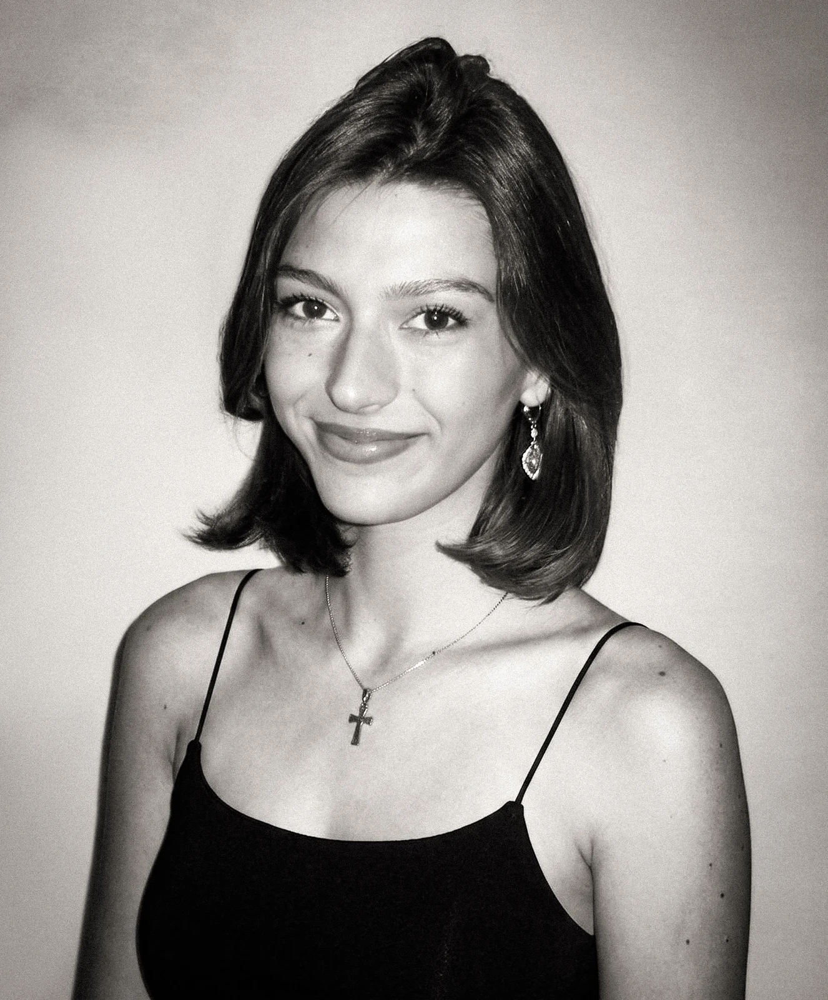
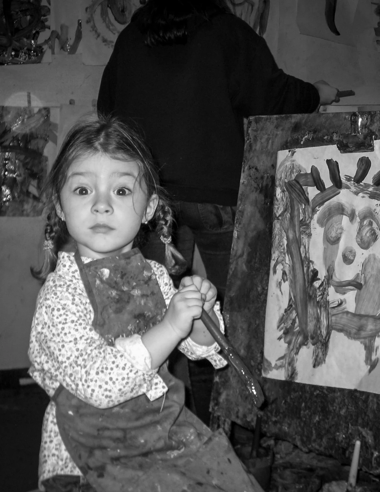

About
I grew up between Spain and the US and I’m now based in Boston, Massachusetts. A recent Advertising and PR graduate with a love for art, graphic design and photography, I’ve been drawing for as long as I can remember and taking photos since picking up my first camera at fourteen. My work mainly focuses on building visual systems for brands and campaigns, exploring aesthetics and emotion, and often extends into illustration, photography, writing and art direction. I enjoy experimenting across disciplines so each project feels complete.
My background in advertising shapes how I work: starting with research and a clear strategy, then moving on to build the visual world, down to the smallest details. I’m naturally curious, always looking to learn something new, and inspiration tends to show up everywhere, from packaging designs and paintings to buildings, people going about their day, or even a good conversation.
Creativity has always been a big part of who I am, and I believe communication and good design have the power to move people. I’m always happy to meet inspiring individuals to collaborate with and bring meaningful ideas to life.
Experience
- RDLB Head of PR, Northeast · Boston2026
- La Machi Communication Communication intern · remote2025
- Divina Events Event hostess · Málaga2023–24
- Soho Boutique Hotels Customer relations · Málaga2023
- Paraty Tech Web & content design intern · Málaga2022
Education
- B.A. in Advertising & PR University of Málaga2022–26
- Study abroad, full year Sapienza University of Rome · Italy2024–25
- Design Strategy Summer course · Boston University2026
Languages
Spanish, native · English, native · Italian, fluent (C1)
Tools
Illustrator · Photoshop · InDesign · Lightroom · CapCut · Procreate · Figma
Currently exploring AI tools and workflows to support my creative process.
Download my CV